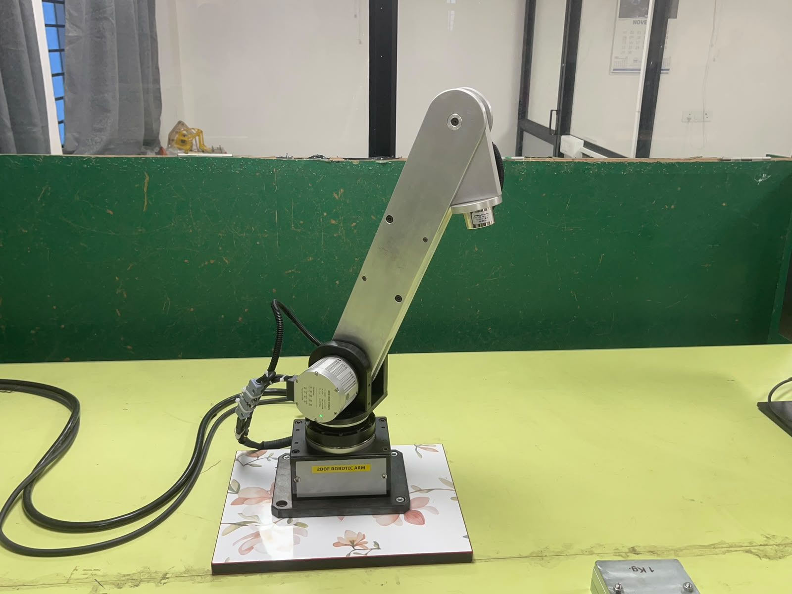
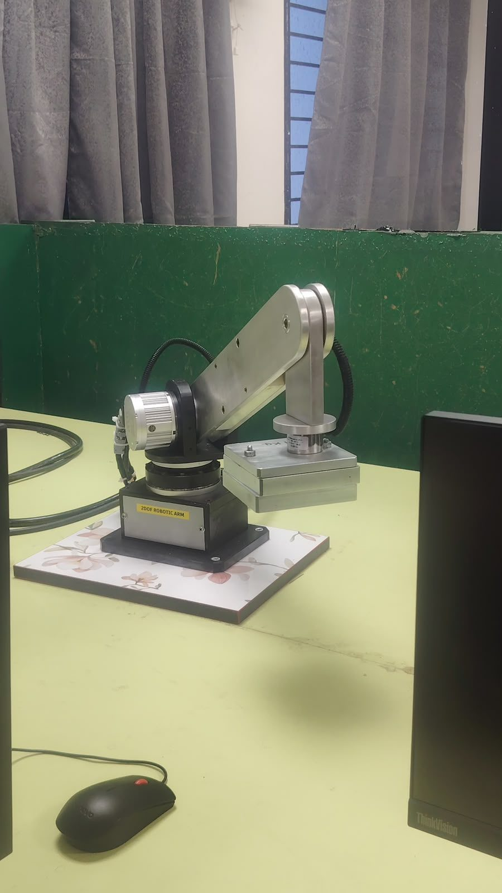

Project case study · Mechatronics & Automation · VIT Chennai
A PLC-controlled 2-DOF robotic arm, designed by simulation
A two-axis pick-and-place arm that lifts a 5 kg ferrous part with an electromagnet, swings it 90° and sets it down. The structure was checked in Ansys before building, those results set the motor sizes, and the arm runs on an industrial PLC with a touch-panel HMI. It has been built and tested on the bench.

5kgDesign payload (electromagnet)
420mmReach, shoulder to tool point
0.085mmMax simulated deflection
4.63Min factor of safety (joint)
2Harmonic-drive servo axes
200kHzPLC pulse outputs
Team Mithunvel K L (23BMH1029) · Vaishnav V G (24BMH1035) · NadrajTools Ansys Mechanical 2023 R1 · KincoBuilder · KincoDTools
Static and transient FEA in Ansys of a 5-body model across a full 120 s pick-and-place cycle. Found the weakest part and its margin.
Actuator sizing
Turned the simulated load case and motion profile into torque, inertia, speed and accuracy requirements, then matched them to harmonic-drive servos.
Industrial control
Kinco PLC with pulse/direction motion, 24 V safety I/O, magnet relay and an Ethernet HMI, all documented in wiring drawings.
Built hardware
Fabricated, wired and running on the bench, holding stacked test plates on the electromagnet.
STEP 1SimulateCheck stiffness and strength in Ansys
STEP 2SizeTurn loads into motor requirements
STEP 3ControlPLC, HMI, I/O and wiring
STEP 4BuildFabricate, assemble, test
The hardware
The arm as built
Side view. Steel base with the base servo under the turntable, shoulder servo on the side, aluminium Link-1, and the electromagnet on the drop link.

Holding stacked steel test plates on the electromagnet.
Mild steel AISI 1010Aluminium 6061Base servo
Schematic side view, not to scale. Two actuated axes: base rotation (waist) and shoulder pitch.
Subsystem
What it is
Material / model
Base
Fixed housing with base servo
Mild steel AISI 1010
Joint (shoulder)
Shoulder servo, bearing housing, pin shaft
Mild steel AISI 1010
Link-1
Two side plates, cross member, end pin
Aluminium 6061
Link-2 + end effector
Drop link and 24 V electromagnet
Aluminium 6061
Base actuator
Integrated harmonic-drive servo
M8025(B)E25B101L
Shoulder actuator
Integrated harmonic-drive servo
M8010(B)E17B81L
Controller
Compact PLC, 8 DI / 8 DO
Kinco K615S-16DT
Operator panel
7-inch touch HMI, Ethernet
Kinco M2070HE
Work envelope of the tool point P: a Ø843 mm ring in plan view, 420 mm reach and a 180° shoulder arc in side view.Step 1 · Structural simulation
Checking the structure before building it
The question was simple: with 5 kg hanging off a 420 mm arm, does any part bend too much or come close to yielding? The model was built and solved in Ansys Mechanical 2023 R1, first in two held poses (static) and then through a full moving cycle (transient).
Model preparation
Bolts, screws and bearings were removed, small holes and fillets suppressed, and mating parts bonded. These details barely affect overall stiffness but make the mesh slow and messy. The assembly was then merged into five solid bodies.
CAD after clean-up: base, base motor, joint motor, Link-1, Link-2, 5 kg load.The five simulation bodies, each treated as one continuous solid.
Body 1 · steel
Base
Housing with the base motor. Fixed to the table.
Body 2 · steel
Joint
Shoulder motor, bearing housing, pin shaft. Rotates about the vertical Y axis.
Body 3 · aluminium
Link-1
Two side plates, cross member and end pin.
Body 4 · aluminium
Link-2 + magnet
Drop link and electromagnet, merged.
Body 5 · steel
5 kg load
Steel cylinder standing in for the part.
Materials: steel where it stays still, aluminium where it moves
Mild steel AISI 1010Aluminium 6061
Aluminium 6061 matches the steel's yield strength at about one third of the density, which cuts the gravity torque the shoulder motor must hold. The trade-off is one third of the stiffness, so the links bend the most.
Mesh, supports and loads
Uniform 5 mm element mesh across all bodies.
Base fixed in all directions, gravity on every body, and the 5 kg payload weight at the magnet.
Two held poses were solved. Pose A (pick-up): arm extended over the part. Pose B (holding): base turned 90° with Link-1 raised, part held. Each solve reports deformation, von Mises stress and factor of safety (yield strength ÷ peak stress; Ansys caps the display at 15).
Step 1 · Results
Stiff, lightly stressed, and the joint governs
The largest deflection anywhere is 0.085 mm at the Link-2 tip, about the width of a hair. Peak stress is under 9 MPa against yield strengths of 250–259 MPa. The joint is the most critical part because it carries the whole cantilever moment of the arm and load.
Deformation by body (mm)
Pose A: pick-upPose B: holding at 90°
Peak stress at pick-up vs yield (MPa)
Bars on a 0–260 MPa scale; red tick = yield strength of that body's material. The bars are barely visible because the metal is barely working.
Minimum factor of safety by body
Pose A: pick-upPose B: holding at 90°FOS = 1 (yield)
Governing case: the joint in Pose B, FOS 4.63. Raising the arm changes how the bending moment passes through the joint housing and pin.
Ansys result plots
Total deformation, Pose A (pick-up).Von Mises stress, Pose A.Factor of safety, Pose A.Total deformation, Pose B (holding at 90°).Factor of safety, Pose B. Joint minimum 4.63.
Step 1 · Transient analysis
Moving through a full pick-and-place cycle
The transient study drives the joints through a 120 s cycle with smooth ramps, so inertia is included. Press play or drag the slider to see the prescribed motion.
Side view · Link-1 & Link-2
Top view · base swing
time
0 s
base
0°
link-1
0°
link-2
0°
Base (0→90°)Link-1 (0→25°)Link-2 (end-link orientation)
Recreated from the Ansys input profiles. Link-2 has no motor; its profile represents the end link's orientation change as Link-1 pitches.
Ansys input: rotation vs time for the joint, Link-1 and Link-2.Transient deformation and FOS of the base, joint, Link-1 and Link-2.
Body
Max deformation at t = 120 s (mm)
FOS
Base
0.0058
≥15
Joint
0.0012
≥15
Link-1
0.071
≥15
Link-2 + magnet
0.0010
≥15
Takeaway: at 90° in 30 s (0.5 rpm) the motion is slow enough that inertia adds little. Motion never beat the static holding pose, so Pose B, joint FOS 4.63 is the design case.
Step 2 · Actuator selection
From simulated loads to motor choice
The simulation fixed three requirements: the gravity moment of the governing pose, the speed and acceleration of the cycle, and a tip accuracy in line with the 0.085 mm structural deflection. Both axes use integrated harmonic-drive servos, each with motor, drive, absolute encoder and strain-wave reducer in one housing.
Shoulder: M8010, 81:1
The shoulder holds the arm against gravity. Its worst case is Link-1 horizontal at full reach with the part held.
The base turns about a vertical axis, so gravity gives no driving torque and the move needs under 1 N·m. The base was sized for what passes through it: the arm's ~31 N·m overturning moment on the output bearing, with the governing joint (FOS 4.63) mounted on top. The M8025 is rated at 85 N·m continuous and 178 N·m peak (80:1 data), and the 101:1 version still reaches about 15 rpm, 30× the 0.5 rpm the cycle needs.
Why harmonic-drive integrated servos
Need from the simulation
What the actuator gives
Backlash small next to 0.085 mm deflection
<20 arcsec, which is 0.04 mm at 420 mm reach
Repeatable pick point
15-bit encoder × 101:1 is about 0.8 µm at the tip
Hold 5 kg at 90° without drift
Closed-loop servo, optional brake
Know position at power-up
Multi-turn absolute encoder + zero output
Compact wiring
Drive built in: pulse/dir + CAN on one connector
Pulse rate within PLC limits
~8 kHz needed vs 200 kHz available
Tip error budget: 0.085 mm deflection + 0.04 mm backlash ≈ 0.13 mm, well inside what a magnetic gripper tolerates.
Step 3 · Control system
Industrial PLC + HMI control
A Kinco K615S-16DT PLC drives both servos in pulse/direction mode, reads their alarm and zero signals, switches the magnet relay and handles the emergency stop. A Kinco M2070HE 7-inch HMI gives the operator jog, auto-cycle and status screens over Ethernet.
Control and power architecture with PLC addresses, taken from the project's electrical drawings.
Why a PLC
24 V isolated I/O wired straight to e-stop, buzzer and relay
Built-in 200 kHz pulse outputs with motion instructions
CANopen master for a future move to bus control (servo EDS file in repo)
The design passes with margin. These are the checks that would take it from "simulated and working" to "validated":
Local joint refinementRe-mesh the joint pin bore finer and confirm the 4.63 FOS with a convergence check.
Bolts and bearingsThey were removed for the global model. A separate hand check of the joint fasteners and bearing would back the "joint is safe" result.
Full time historyPull peak transient values from mid-swing, not only at the end of the cycle.
CAD masses for sizingReplace estimated link masses and read the joint reaction torque straight from Ansys. The shoulder torque has about 1.6× margin on peak.
Supply voltageServos are catalogued at 36 VDC and fed 24 V. Fine for this slow cycle, but worth confirming on the nameplate.
Measure itDial-gauge the tip under 5 kg and compare with the 0.085 mm prediction.
People & skills
Team
Mithunvel K L23BMH1029 · B.Tech. Mechatronics & Automation, VIT Chennai
Vaishnav V G24BMH1035 · B.Tech. Mechatronics & Automation, VIT Chennai